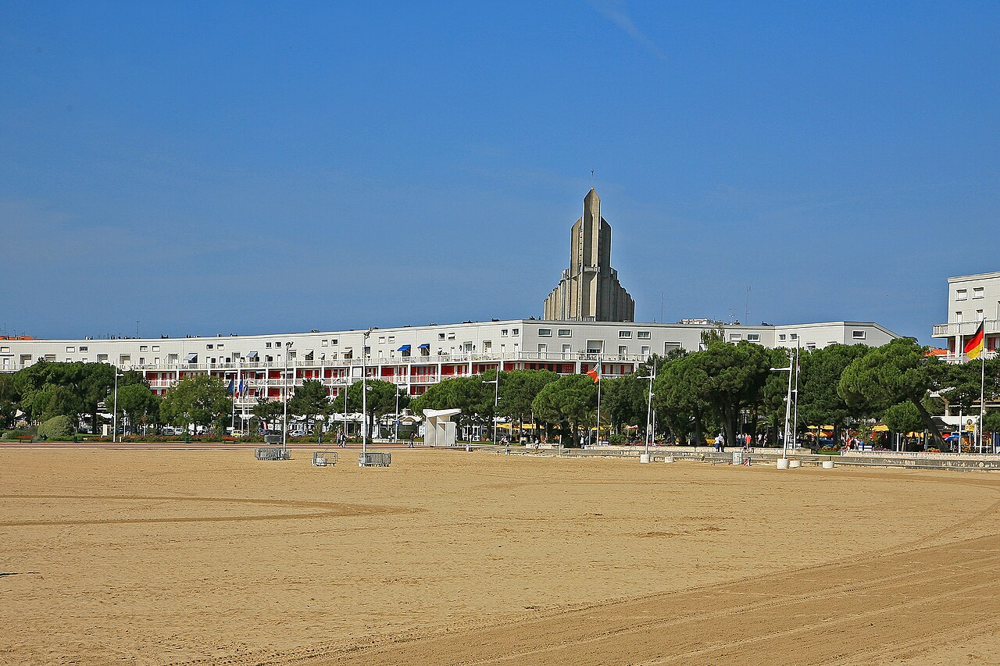

Le matin : faire un détour par le marché
Le marché central, avec sa couverture en forme de coquillage, est une excellente entrée en matière. Flânez entre les étals et composez votre déjeuner selon la saison. Vérifiez les jours d’ouverture avant de partir si cette halte compte dans votre programme.
Lever les yeux sur la ville
Royan porte la marque de sa reconstruction et de l’architecture audacieuse des années 1950. Observez les façades pendant votre balade et repérez l’église Notre-Dame : construite en béton armé, elle est classée au titre des Monuments historiques. Sa silhouette moderne raconte elle aussi l’histoire de la reconstruction de la ville. Pour approfondir cette découverte, cherchez une visite consacrée à l’architecture auprès de l’office de tourisme.

Photo : Patrick Despoix · CC BY-SA 3.0 (Cadrage adapté)
L’après-midi : retrouver la Grande Conche
Rejoignez le front de mer pour une promenade ou une pause sur le sable fin. La Grande Conche offre une perspective spectaculaire sur l'estuaire et l'océan. Offrez-vous une glace sur le front de mer ou près du port pour une pause gourmande face à l’océan. Un livre, un goûter et un vêtement contre le vent suffisent pour prolonger le moment en toute quiétude.
Adapter sa sortie à la saison
En été, prévoyez un peu de marge pour le stationnement et cherchez l’ombre aux heures chaudes. Hors saison, privilégiez la promenade vivifiante et confirmez les ouvertures des commerces. Pour la baignade, consultez toujours la signalisation des sauveteurs.
Stationnement à Royan : les bons repères
En été, le stationnement près du marché et du front de mer est particulièrement recherché. En basse saison, il est généralement plus facile de trouver une place, mais prenez toujours le temps de vérifier les panneaux et les éventuelles restrictions temporaires.
Parking du Marché central. Idéal pour commencer la matinée au plus près des étals et découvrir l’architecture en coquillage du marché. Il est très sollicité les jours de grand marché en juillet et août : arrivez tôt si vous le pouvez.
Parking de la Tache Verte. Un vaste espace qui peut constituer une bonne alternative pour éviter de tourner dans l’hypercentre en haute saison, à quelques minutes à pied du centre et du front de mer. Vérifiez les conditions et tarifs affichés sur place.
Parking de la Gare. Une autre option pratique pour laisser la voiture et rejoindre le centre-ville à pied, en évitant de chercher une place au plus près du front de mer. Vérifiez la signalisation et les conditions de stationnement en vigueur.
À emporter : de l’eau et une protection solaire. L’accès à la plage ne garantit pas une baignade surveillée à votre date de séjour.
Pour préparer votre sortie : Royan Atlantique — Découvrir Royan ↗. Vérifiez les horaires et conditions sur le site officiel avant votre visite.